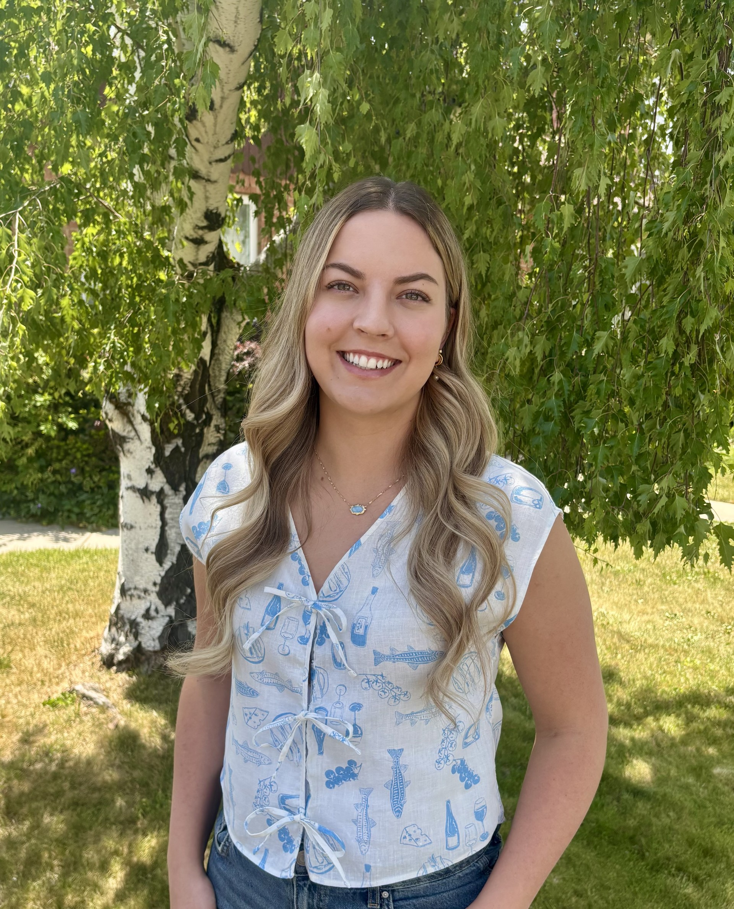

I am a Ph.D. candidate in Mathematics at Brigham Young University, studying several complex variables under the supervision of Professor Jennifer Brooks. My research focuses on invariant CR mappings and proper holomorphic maps between spheres and hyperquadrics.
I am also passionate about undergraduate mathematics education, designing interactive learning experiences that help students build conceptual understanding and become confident, independent problem solvers.
From Australia's Sunshine Coast to the Rocky Mountains, my journey in mathematics has been shaped by a passion for both research and teaching. I grew up in Queensland before moving to the United States to pursue graduate studies at BYU, where I enjoy finding ways to communicate complex ideas through clear explanations, visual design, and active learning.
Outside of mathematics, I enjoy reading, baking, travelling, and sharing Australian culture with my students through a weekly "Five Minutes of Australia" classroom tradition.
My research lies in several complex variables and CR geometry, with particular focus on:
I believe students learn mathematics most effectively when they understand why ideas work. My teaching emphasizes conceptual understanding, active learning, and visual problem-solving through guided lecture notes, collaborative reviews, and mathematical decision roadmaps.
My goal as an instructor is to help students develop a deep conceptual understanding of mathematics while becoming confident, independent problem solvers. I strive to create a classroom where students actively engage with ideas, explain their reasoning, and recognize connections between concepts rather than relying on memorized procedures.
To support this, I design my own guided lecture templates, visual problem-solving roadmaps, and collaborative review activities that help students organize their thinking and develop effective mathematical decision-making skills.
Below is a sampling of materials across Precalculus, Calculus, and Linear Algebra. All materials on this page—including my customizable LaTeX lecture note template—are freely available to download, adapt, or modify for non-commercial educational use.
Rather than holding a traditional instructor-led review session, I prepare students for exams through collaborative blackboard review activities. Students work together at topic-based stations to explain ideas, solve problems, and learn from one another while I circulate to provide targeted guidance and address misconceptions.
This format transforms a review into an active learning experience, encouraging mathematical communication, peer teaching, and independent problem-solving while allowing students to focus on the topics they find most challenging.
Modular tcolorbox template with roadmaps, think-pair-share prompts, definitions, and strategy boxes.
Roadmaps: One challenge students often face is deciding what to do next when solving a problem. To support independent problem solving, I design visual decision roadmaps that organize common solution strategies into clear, step-by-step processes. Rather than memorizing isolated procedures, students learn to recognize the structure of a problem and choose an appropriate solution path.
Building classroom community is just as important as building mathematical understanding. During the semester, I spend five minutes at the beginning of each class sharing a different aspect of Australian culture, helping students get to know me while encouraging conversation and creating a welcoming classroom environment.
Instructor of Record
Teaching Assistant & Recitation Leader
Grader
Tutorial Instructor
Publications and ongoing research projects.
Extra-curricular academic activities and community engagement.